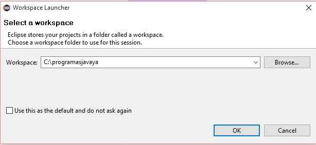
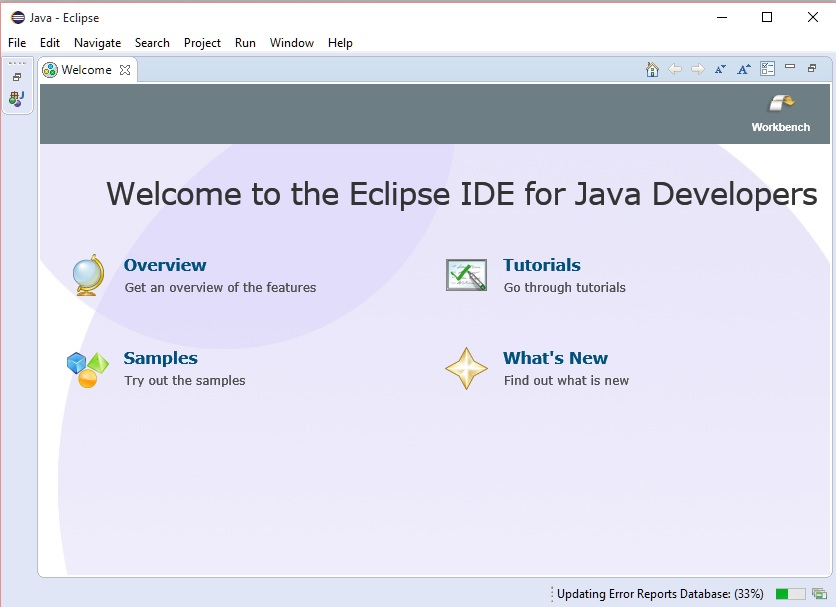
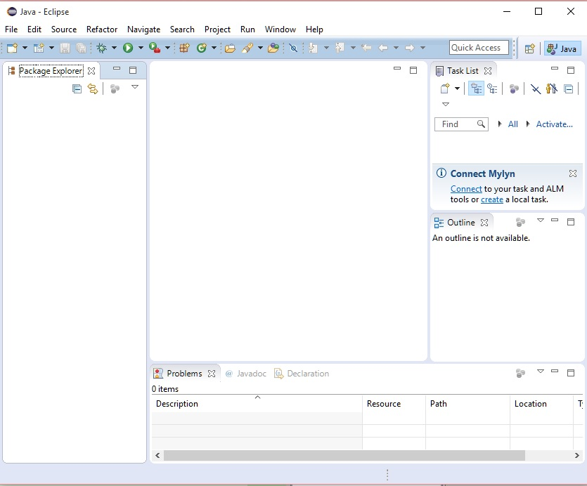

- Instalación del editor Eclipse |
En el concepto anterior procedimos a instalar el lenguaje Java (con dichas herramientas podemos ejecutar y compilar programas codificados en java), pero ahora necesitamos instalar el Eclipse que es un editor para codificar los programas (si bien podemos utilizar otros editores, nosotros utilizaremos este para seguir el curso)
Para la descarga del editor Eclipse lo hacemos del sitio:
Eclipse IDE for Java Developers.(Esta es la que más se adecua a nuestro estudio, elegimos el de 64 bit o 32 bit según la versión de JDK instalada anteriormente)
Una vez que descargamos el Eclipse su instalación es muy sencilla, creamos una carpeta llamada eclipse y procedemos a descomprimir el archivo descargado indicando solamente la unidad donde se instala (ejemplo c:).
Ahora nos dirigimos a la carpeta donde se instalaron los archivos y procedemos a ejecutar el programa eclipse.exe
Primero aparece un mensaje de inicio del Eclipse:
Luego la primera vez que ejecutemos el editor Eclipse aparece un diálogo para seleccionar la carpeta donde se almacenarán los programas que desarrollaremos (podemos crear una carpeta donde almacenaremos todos los proyectos que desarrollaremos en el curso, si indicamos una carpeta que no existe el mismo Eclipse la crea):

Luego de configurar la carpeta donde se crearán los proyecto aparece el editor con una pantalla de presentación (Welcome):

Esta ventana de bienvenida la podemos cerrar seleccionando el ícono: "Workbench", con lo que aparece el entorno de trabajo del Eclipse (si queremos nuevamente ver la ventana de bienvenida podemos activarla desde el menú de opciones: Help -> Welcome")
El entorno de trabajo del Eclipse es:
